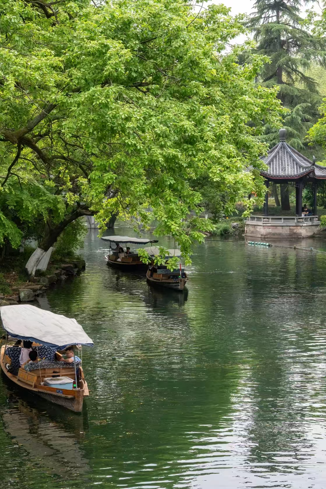
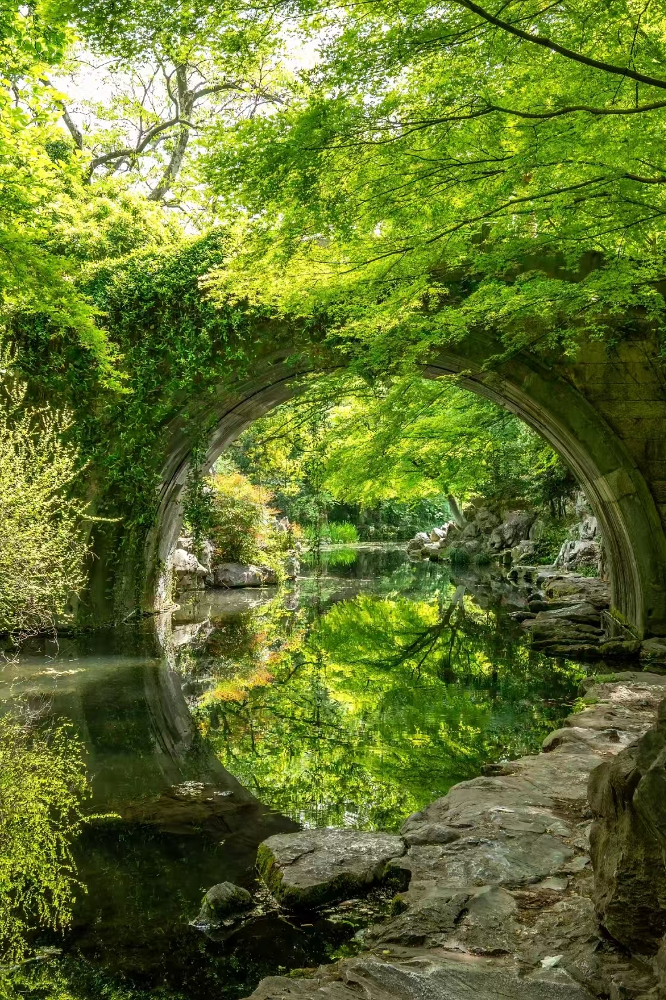
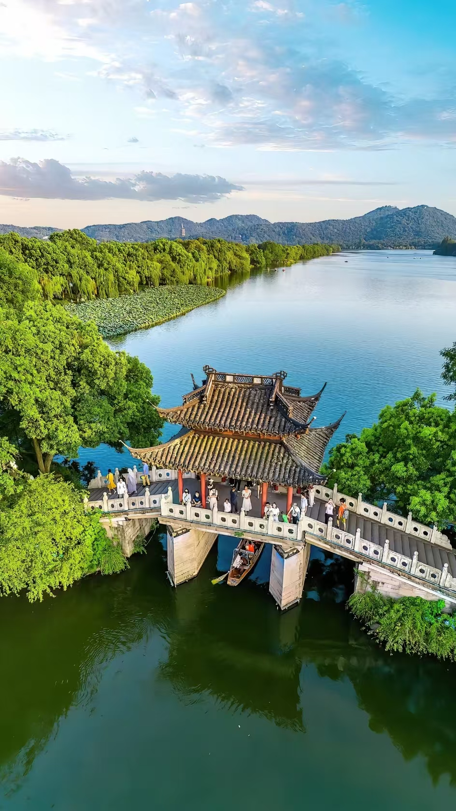
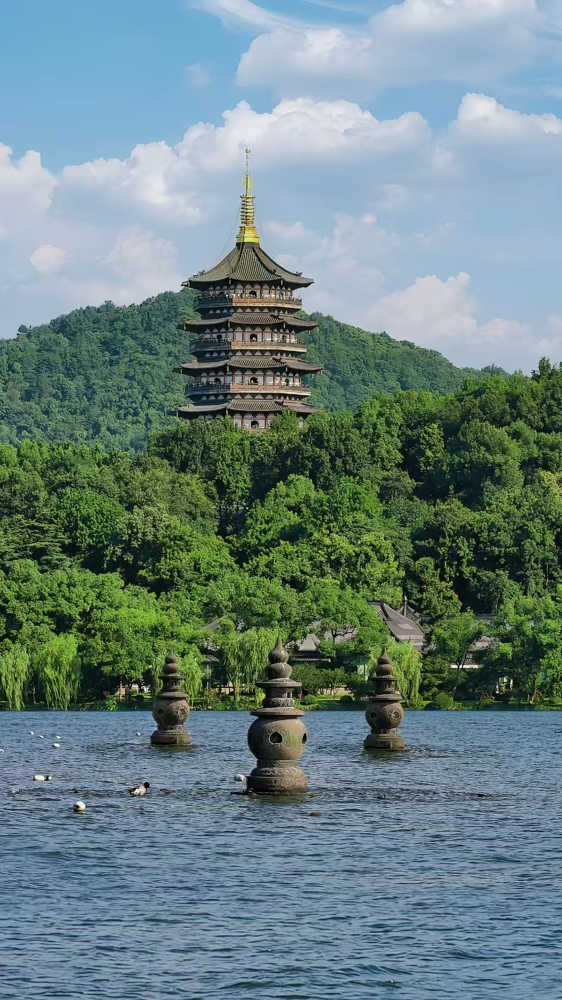

Hangzhou Travel Guide 2026: West Lake, Tea Hills and How to Actually Enjoy It
There's a saying in China that goes: "Above is heaven, below is Suzhou and Hangzhou." I used to think that was just tourist brochure language until I spent a morning cycling along West Lake before the crowds arrived. The mist was sitting low over the water, willows trailing into it, pagodas appearing and disappearing in the haze. It genuinely looked like a painting. Not metaphorically — like someone had lifted a scene directly from a Song Dynasty scroll and made it real.
Hangzhou is about an hour from Shanghai by high-speed train and completely different in atmosphere. Where Shanghai is relentless and kinetic, Hangzhou is composed. The pace is slower. The food is lighter. The whole city feels like it was designed around the idea of taking your time.
West Lake: How to Do It Right

West Lake from above — the causeways, islands and pavilions that have been drawing visitors for over a thousand years.
West Lake is free to enter and the right way to experience it is on foot or by bicycle. The full perimeter is about 15km — too far to walk comfortably in a day, but perfectly manageable by bike. Shared bikes are available everywhere around the lake for around ¥10 an hour. Go early. Before 8am the light is soft, the paths are nearly empty and the reflections on the water are extraordinary. By 10am the tour groups have arrived and the atmosphere shifts completely.
The three causeways — Su Causeway, Bai Causeway and Yang Causeway — are the classic West Lake walk. Su Causeway in particular, with its six arched bridges and flanking willows, is what the famous paintings are based on. Walk it in the direction that keeps the lake on your left.
Leifeng Pagoda (¥40) is worth the admission for the view from the top looking back across the lake. The original pagoda collapsed in 1924 — the current one is a reconstruction from 2002 — but the views are genuine and the site has a good small museum about the archaeological finds from the original structure.
In my experience the boat to Santan Yinyue (Three Pools Mirroring the Moon) is more crowded than it's worth unless you're a photography enthusiast specifically after the view of the small stone pagodas in the water. The ¥60 boat ticket plus the crowds inside make it a poor value compared to just walking the causeways.
Around the lake entrance areas you'll find people offering "cheap guided tours." In my experience these always end at a tea shop or silk store where you're pressured to buy. The official Hangzhou Tourism app has free audio guides in English that cover every major spot — use those instead.
Lingyin Temple and Feilai Peak

The quieter canal areas around Hangzhou — boats, pavilions and green water that feel completely removed from any city.
Lingyin Temple is one of the most important Buddhist temples in China and genuinely worth a half day. The combined ticket is ¥75 — ¥45 for Feilai Peak (the rocky area with hundreds of Buddhist carvings dating back to the 10th century) and ¥30 for the temple itself.
Go on a weekday if possible. Weekends bring significant crowds and the atmosphere inside the temple becomes difficult. I visited on a Tuesday morning in October and had stretches of the path through Feilai Peak almost entirely to myself — the carved figures emerging from the rock face, the light filtering through the canopy above. It was one of the better hours I've spent anywhere in China.
The temple requires conservative dress — no shorts or sleeveless tops. Don't photograph people who are actively praying. The Hall of the Great Hero houses a 24-meter gilded camphor wood statue of Sakyamuni that is genuinely impressive in scale.
Longjing Tea: The Village, Not the Shop

Classical garden architecture in Hangzhou — the moon gate framing water and greenery is one of the most distinctive visual elements of the city.
Longjing (Dragon Well) tea is one of China's most celebrated teas and it grows in the hills immediately west of West Lake. I made the mistake on my first visit of buying tea from a shop near the lake — expensive, probably not authentic Longjing, definitely not fresh. The right approach is to go to Longjing Village itself.
Take the bus or DiDi to Longjing Village, walk into the tea hills and buy directly from a farmer. You can often watch the tea being hand-roasted in large woks over charcoal. The farmers are used to visitors and many speak some English. Prices are a fraction of what you'd pay at a tourist shop, and the tea is actually from the place it says it is.
Spring (late March to early May) is when new season Longjing tea is harvested and the hills are actively being picked. If you're visiting then, the whole area smells of fresh tea leaves and the hillsides are dotted with workers in wide-brimmed hats. It's worth timing a visit specifically for this.
Xixi Wetlands

One of the covered bridges over West Lake — the architecture around the lake is as much a draw as the water itself.
Xixi National Wetland Park (¥80) is Hangzhou's underrated attraction. It's a large protected wetland area west of the city — rivers, reed beds, traditional fishing villages, an extraordinary amount of birdlife. You can rent a small boat and pole through the channels, or walk the elevated boardwalk paths. It takes a full morning or afternoon to do properly.
Most international visitors skip it in favor of spending more time at West Lake, which I think is a mistake. The wetlands are genuinely different — quieter, greener, with a sense of space that West Lake during peak hours doesn't have. Best in autumn when the reeds turn gold.
Food in Hangzhou

Leifeng Pagoda reflected in West Lake — the view from the top looking back across the water is worth the ¥40 admission.
Hangzhou cuisine is lighter and sweeter than most Chinese regional food. West Lake Fish in Vinegar Gravy (西湖醋鱼) is the dish the city is famous for — freshwater fish in a sweet-sour sauce that's more delicate than it sounds. Zhiweiguan and Louwailou are the old establishments for this; expect a wait at both on weekends, and expect prices that reflect their tourist status.
Dongpo Pork (东坡肉) is the other must-eat — a single large piece of pork belly braised in soy sauce, Shaoxing wine and sugar until the fat is completely soft and the whole thing trembles when it arrives. Named after the Song Dynasty poet Su Dongpo who supposedly invented it. One piece with rice is a complete and deeply satisfying lunch.
For street food: cong bao hui (葱包烩) is Hangzhou's answer to a hot dog — a thin pancake wrapped around a fried cruller with scallion and sweet bean paste, pressed flat on a griddle until crispy. Found at street stalls around Hefang Street for ¥5-8. Ding Sheng Gao (定胜糕), a soft sweet rice cake shaped like an hourglass, is the thing to buy from bakeries along Hefang Street.
Tea sold in tourist areas around West Lake labeled "authentic Longjing" is frequently from other provinces. The real thing has a specific flat, needle-like appearance and a clean grassy-sweet flavor. If you want genuine Longjing, go to the village. ¥50-80 per 50g from a farmer is a fair price for decent quality.
Getting There and Around
High-speed trains from Shanghai Hongqiao to Hangzhou East take about 45 minutes and run frequently. From Beijing it's about 4.5 hours. Hangzhou East Station is well connected to the city by metro.
The metro covers the main areas including West Lake area (Longxiangqiao station), Lingyin Temple area (transfer at Fengqi Road) and Xixi Wetlands. Shared bikes and DiDi cover everything else. The city is genuinely pleasant to cycle in around the lake area — flat, well-signed and worth doing slowly.
Best Time to Visit
Spring (March-May) is the classic answer — cherry blossoms, peach blossoms and the fresh tea harvest. The crowds reflect this; Golden Week in early May is extremely busy. Autumn (September-November) is my preference — osmanthus flowers bloom in late September filling the whole city with a faint apricot scent, the crowds are smaller, and the light is better for photography. Summer is hot and humid. Winter is cold and quiet with some of the best lake photography possible on misty mornings.